title: "David Held (CMU): A Case Study of RL — Robot Assisted Dressing" tags: - youtube - 연구자료 source: "https://www.youtube.com/watch?v=qgTLr3h6BuA" channel: "Zhanpeng He" video_id: "qgTLr3h6BuA" date: 2026-08-08
David Held (CMU): A Case Study of RL — Robot Assisted Dressing
영상 정보
- 채널: Zhanpeng He (ICRA 2026 RL4IL 워크샵)
- 게시일: 2026-06-08
- 길이: 28분 50초
- 링크: https://www.youtube.com/watch?v=qgTLr3h6BuA
<div relative; width: 100%; padding-bottom: 56.25%; height: 0; overflow: hidden;"> <iframe absolute; top: 0; left: 0; width: 100%; height: 100%;" src="https://www.youtube.com/embed/qgTLr3h6BuA" frameborder="0" allowfullscreen></iframe> </div>
한줄 요약
착의 보조라는 단일 과제를 수년간 끝까지 밀어붙인 케이스 스터디다. 시뮬레이션은 체형·자세·의복 일반화를 주지만 힘이 부정확하고 물리가 불안정하다는 벽에 부딪혔고, 그 해법으로 비전은 시뮬에서, 힘은 실세계에서 배운 뒤 결합하는 경로를 단계적으로 만들어간다. 보상이 없는 실세계 문제는 VLM에게 두 장면을 비교시켜 푼다.
핵심 장면 분석
00:02:20 — 왜 착의 보조인가
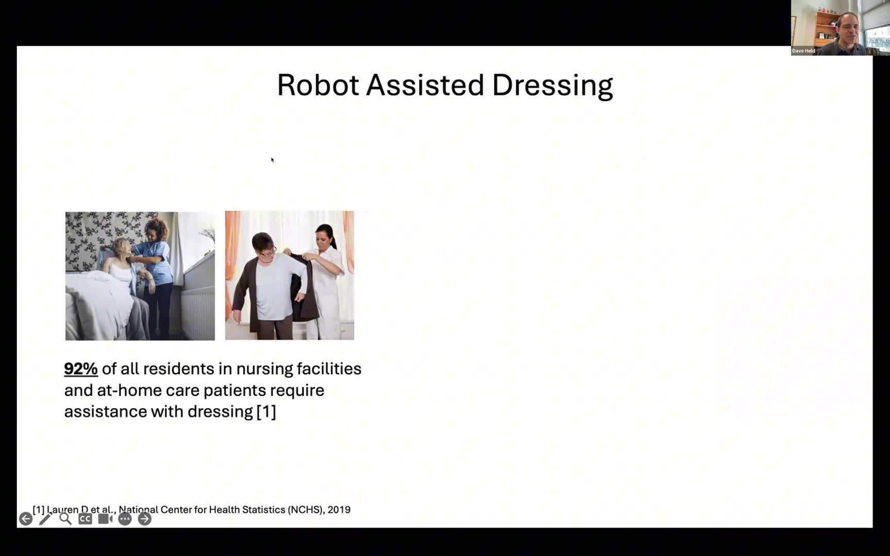
과제 선정의 근거가 통계로 제시된다. 요양시설 거주자와 재택 간병 환자의 92%가 착의에 도움을 필요로 한다. 로봇이 이를 대신하면 간병 부담이 크게 줄어든다. 동시에 매우 어려운 과제이기도 하다. 의복이 변형체이고 착의 과정에서 반드시 변형되어야 하며, 상대인 사람 역시 변형체이고 안전하게 다뤄야 하며, 다양한 의복·자세·체형에 일반화해야 한다.00:03:10 — 시뮬레이션으로 다양성 확보
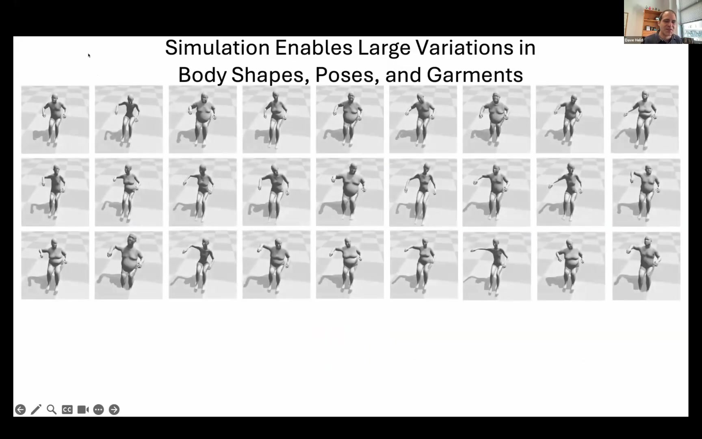
실세계에서 그만한 다양성의 데이터를 모으기는 어렵기 때문에 시뮬레이션을 택했다. 6,000개가 넘는 인체 메시와 5종의 의복으로 데이터셋을 구성한다.00:05:00 — 표준 RL은 다양성 앞에서 무너진다
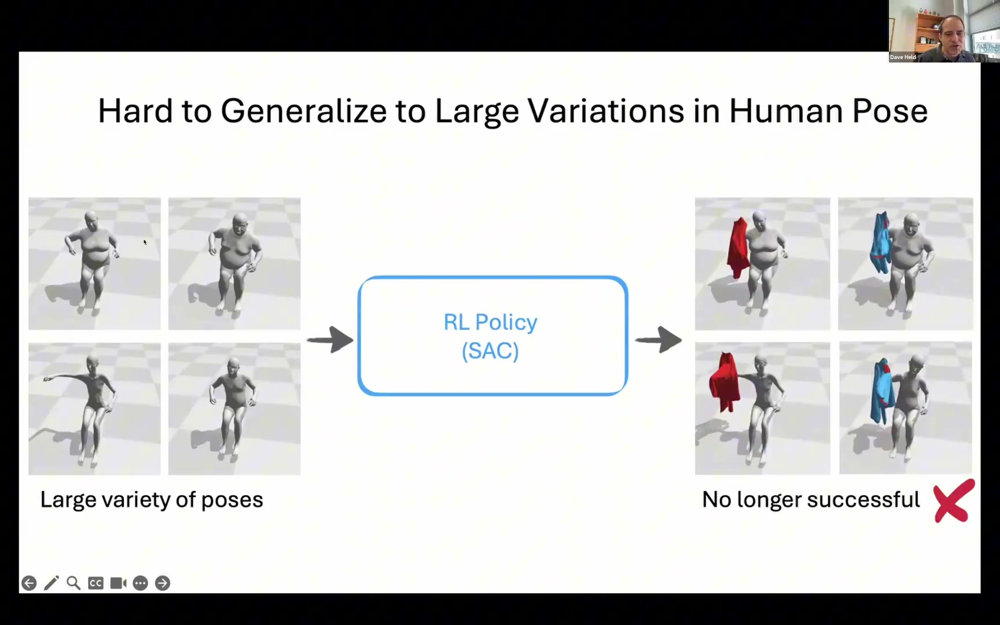
설정은 평범하다. 분할된 포인트 클라우드(의복·팔·엔드이펙터)를 입력받고, 시뮬레이터의 ground truth로 "팔을 얼마나 입혔는가"를 보상으로 삼아 SAC로 엔드이펙터 행동을 학습한다. 한 사람에 대해서는 작동한다. 그러나 여러 자세와 체형으로 확장하는 순간 관측 공간과 보상의 분산이 너무 커져 수렴하지 않는다.00:06:10 — 정책 증류로 우회
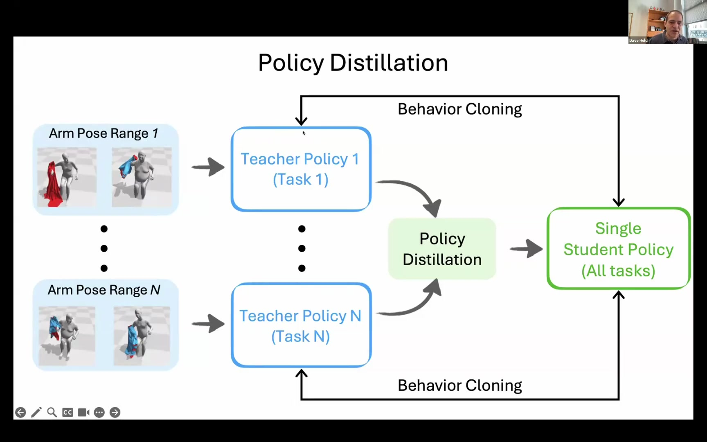
해법은 분할 정복이다. 인체 자세를 N개 범주로 나누고 범주마다 교사 정책을 RL로 따로 학습한다. 각 교사의 과제 공간이 좁아지므로 수렴한다. 그런 다음 행동 복제로 하나의 학생 정책에 증류해 모든 자세를 처리하게 만든다.00:06:50 — 실세계 검증
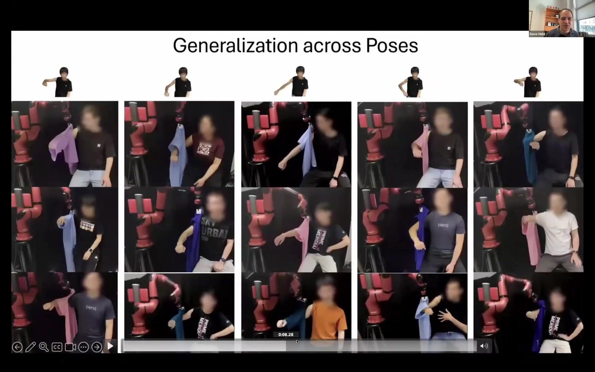
참가자 17명, 1인당 30회, 의복 5종으로 실험했다. 열마다 다른 의복, 다른 자세에 대해 착의가 성공한다. 사용자 설문에서 증류 정책은 "옷이 제대로 입혀졌다"는 항목에 높은 점수를 받았고, 증류를 쓰지 않은 기준선은 동의를 얻지 못했다.00:07:35 — 소매가 길수록 어려워진다
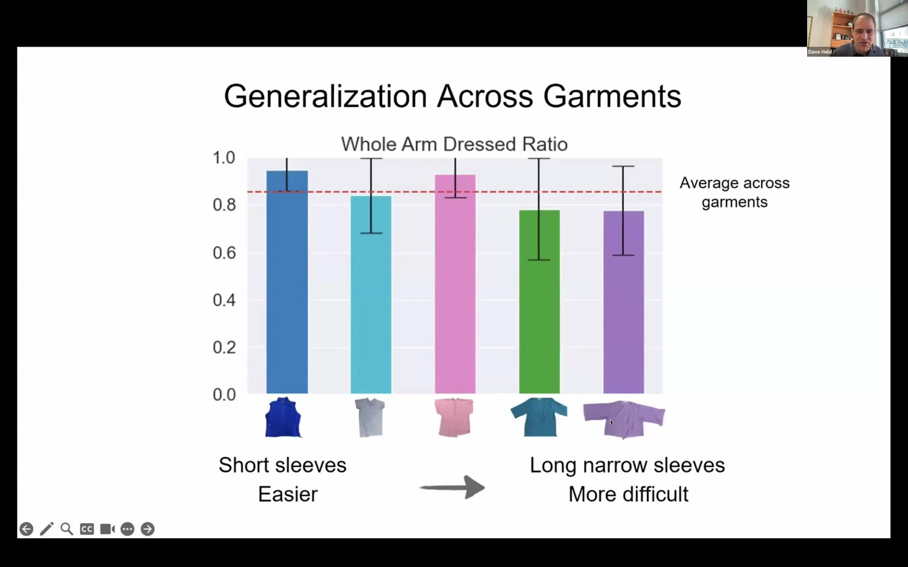
의복별 성능을 보면 경향이 뚜렷하다. 짧은 소매는 쉽고, 길고 좁은 소매로 갈수록 어려워진다. 이유는 뒤에서 밝혀지는데, 긴 소매일수록 가림(occlusion)이 심해 로봇이 상황을 볼 수 없기 때문이다.00:08:30 — "로봇이 나와 싸우는 것 같다"
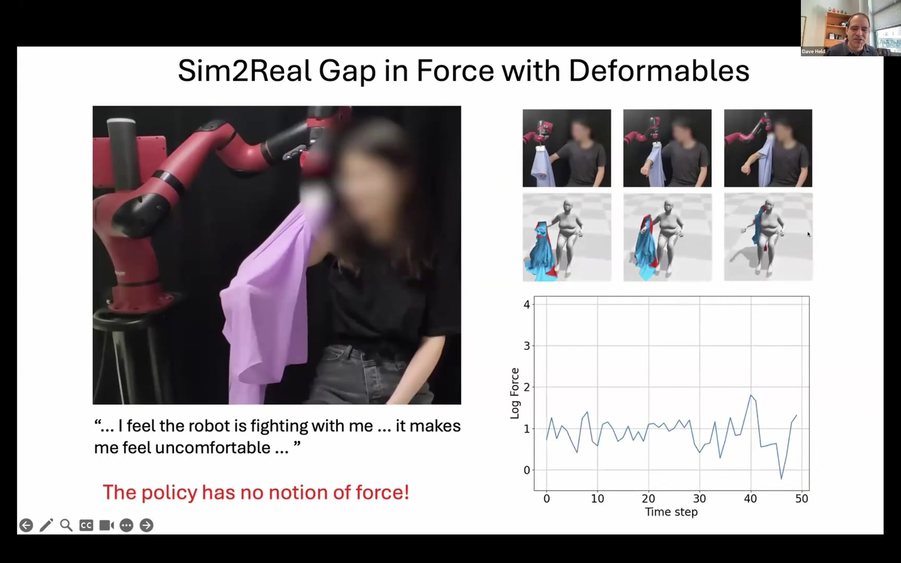
발표의 전환점이다. 심한 가림 상황에서 참가자가 남긴 말이 슬라이드에 그대로 인용된다. "로봇이 나와 싸우는 것 같아서 불편하다." 원인은 명확하다. 이 정책에는 힘이라는 개념이 아예 없고 비전만으로 문제를 풀려 한다. 오른쪽 그래프는 실세계에서 측정한 힘과 시뮬레이션에서 같은 동작을 재현했을 때의 힘이 일치하지 않음을 보여준다. 온갖 방식으로 조정해봤지만 맞출 수 없었다. 시뮬레이터는 천의 일반적인 동역학은 잘 재현했지만 힘 측정값만큼은 전이 가능한 수준이 아니었다.00:09:20 — 사람이 팔을 움직이면 멈춘다
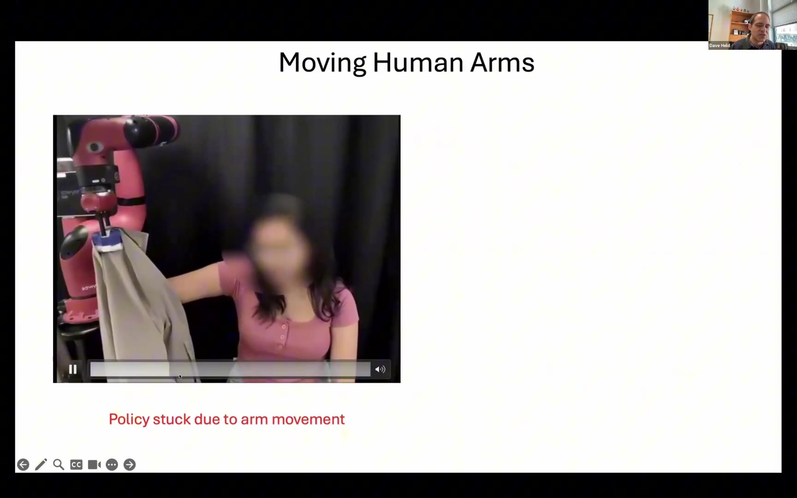
두 번째 실패 모드. 착의 도중 사람이 팔을 움직이면 그 팔이 가려져 있기 때문에 순수 비전 정책은 대응하지 못하고 끼인다. 시뮬레이션에서 사람 팔을 움직여 학습시키려 했더니 물리가 불안정해지고 천이 폭발하는 문제가 이어졌다.00:09:50 — 시뮬레이션의 장부와 단점
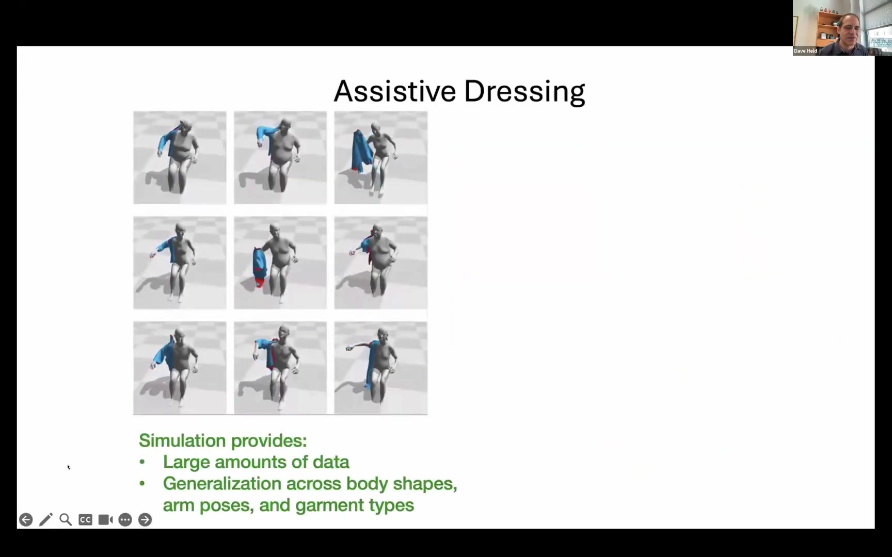
중간 정산이다. 시뮬레이션은 대량의 데이터와 체형·자세·의복 전반의 일반화를 준다. 그러나 힘이 부정확하고 물리가 불안정하다. 실세계 모방학습은 힘 쪽은 낫지만, 모든 체형·자세·의복을 아우를 만큼 데이터를 모으기 어렵다.00:12:10 — 해법 1: 힘 제약 시각 정책(FCVP)
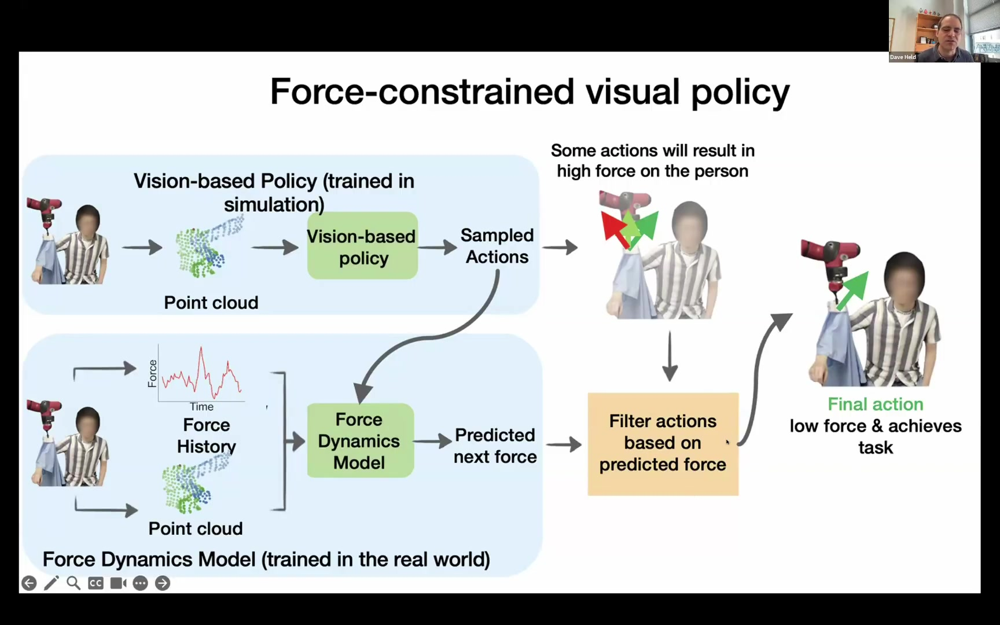
두 세계를 결합한다. 비전 기반 정책은 시뮬레이션에서, 힘 동역학 모델은 실세계에서 학습한다. 정책이 행동 분포를 내면 여러 개를 샘플링하고, 실세계에서 학습한 힘 동역학 모델(힘 이력 + 포인트 클라우드 → 다음 힘 예측)로 각 행동이 유발할 힘을 예측해 임계값을 넘는 행동을 걸러낸다. 남은 것 중 정책 확률이 가장 높은 행동을 최종 선택한다. 핵심 이점은 학습 비용이다. 동역학 모델은 정책보다 훨씬 빨리 학습되므로 실세계 데이터가 적게 든다.00:13:00 — 힘 위반은 줄고 착의율은 유지된다
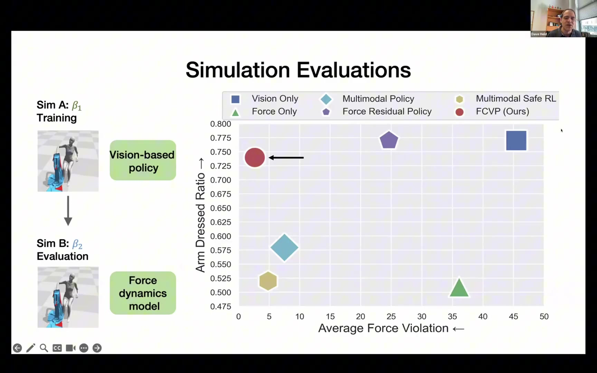
시뮬레이션 파라미터 세트 A로 정책을, 세트 B로 힘 모델을 학습시켜 sim-to-real 적응의 대리 실험을 구성했다. 가로축은 평균 힘 위반(왼쪽이 좋음), 세로축은 팔 착의 비율(위가 좋음)이다. FCVP는 다른 방법보다 힘 위반이 훨씬 적으면서 착의 비율은 거의 동등하다. 실세계 사용자 연구에서도 비전 전용 기준선은 끼여서 멈추는 반면, FCVP는 힘 신호를 읽고 행동을 조정해 빠져나온다. 흥미로운 것은 힘 제약을 걸었는데도 착의 비율이 오히려 더 높다는 점이다. 힘을 인지하는 것 자체가 정책을 더 성공적인 행동으로 유도한다.00:14:30 — 다음 벽: 보상 설계
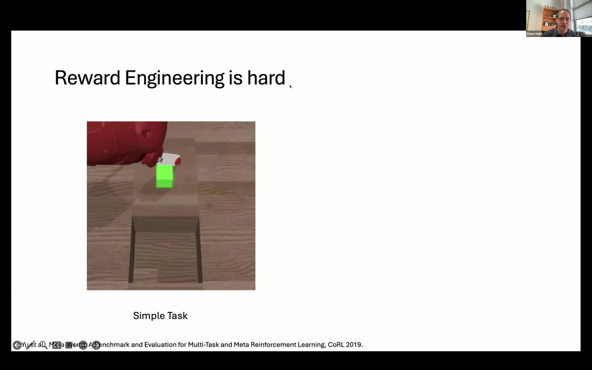
"실세계에서 RL을 하면 더 잘할 수 있지 않을까"로 넘어가면 곧바로 보상 설계 문제를 만난다. 블록 밀기처럼 단순한 과제조차 사람들은 꽤 복잡한 보상(그리퍼가 블록 근처로, 블록이 목표 방향으로, 최종적으로 목표 도달)을 설계한다.00:15:10 — 실세계에는 코드가 없다
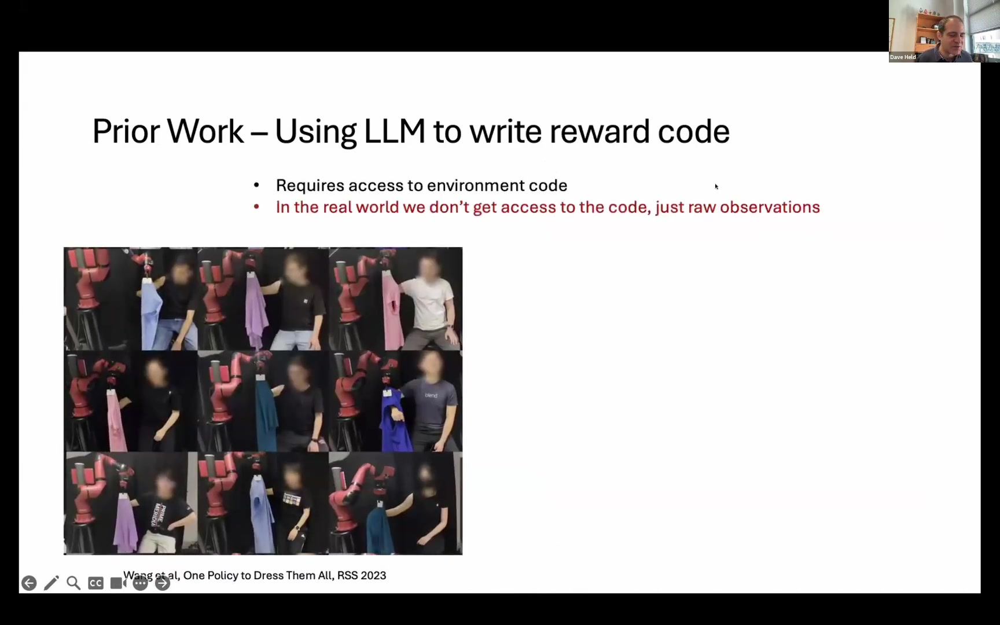
LLM에게 보상 코드를 짜게 하는 접근이 시뮬레이션에서는 통한다. 그러나 실세계 착의에는 적용할 수 없다. 붉은 문장이 이유다. "실세계에서는 코드에 접근할 수 없고 원시 관측만 얻는다." 이전 연구에서 쓰던 시뮬레이터의 특권 정보 기반 보상도 이제 쓸 수 없다.00:16:00 — CLIP 계열 보상의 한계
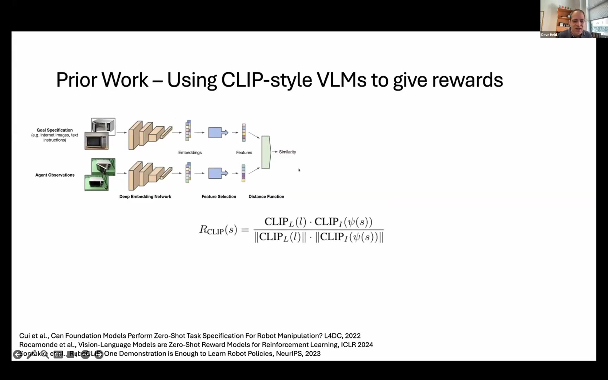
이미지와 목표 이미지를 임베딩해 특징을 비교하는 CLIP 계열 보상이 대안으로 제시되어 왔다. 그러나 CLIP 학습 데이터(언어-이미지 쌍)의 범위에 갇히고, 이미지 정합 기반이라 보상이 상당히 노이즈가 많다.00:16:50 — 사람도 절대 점수는 일관되지 않다
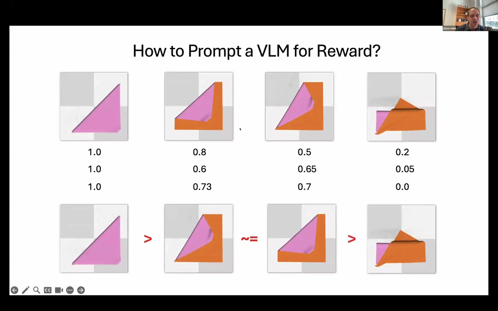
발상의 전환이 여기서 나온다. 같은 장면들에 사람에게 점수를 매기게 하면 사람마다, 심지어 같은 사람도 시점마다 숫자가 달라진다. 그러나 순서(어느 쪽이 더 진행됐는가)는 일관된다. 그렇다면 VLM에게도 숫자를 묻지 말고 두 이미지를 비교시켜야 한다.00:17:30 — RL-VLM-F 파이프라인
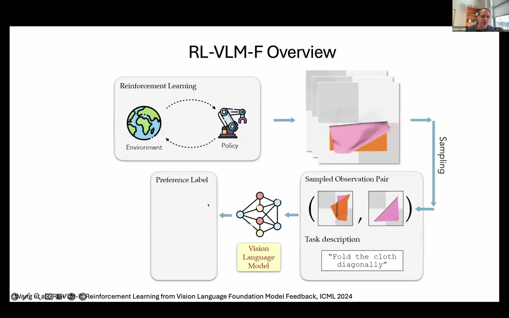
전체 구조다. 관측 두 개와 과제 설명("천을 대각선으로 접어라")을 VLM에 주고 어느 쪽이 더 진행됐는지 묻는다. 그 선호 라벨로 보상 모델을 학습하고, 그 보상으로 정책을 개선한다. 사람이 제공하는 것은 과제 설명 한 줄뿐이고 나머지는 자동이다.00:18:10 — Bradley-Terry로 선호를 보상으로
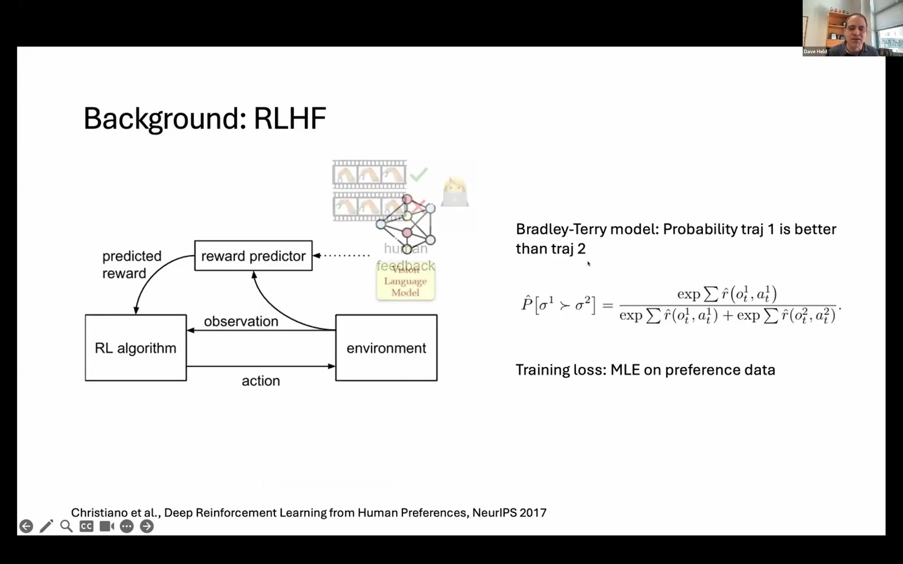
RLHF의 표준 도구를 그대로 쓴다. 사람 또는 VLM이 한 궤적을 다른 궤적보다 선호하면 그쪽 보상이 높아지도록 Bradley-Terry 모델을 선호 데이터에 대한 MLE로 학습한다.00:19:00 — 비교가 원시 점수를 이긴다
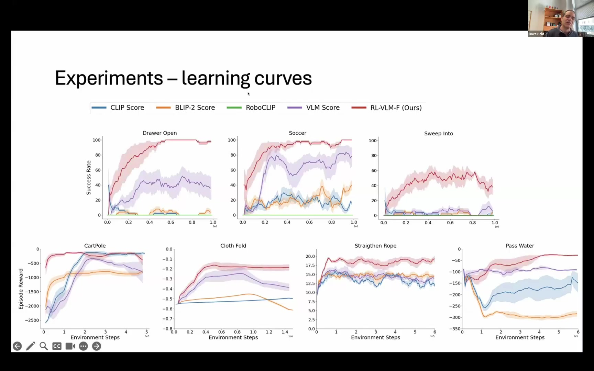
학습 곡선 비교다. CLIP Score, BLIP-2 Score, RoboCLIP, 그리고 VLM에게 원시 점수를 물은 경우를 모두 제치고 RL-VLM-F(빨강) 가 앞선다. 수작업으로 설계한 ground truth 보상과 비교해도 격차가 크지 않다. 참고로 2단계 프롬프팅이 효과적이었다. 먼저 두 이미지와 그 차이를 서술하게 하고, 그다음에 어느 쪽이 더 진행됐는지(또는 "둘 다 아님") 라벨을 매기게 한다.00:20:20 — 무라벨 실세계 데이터에 보상을 붙이다
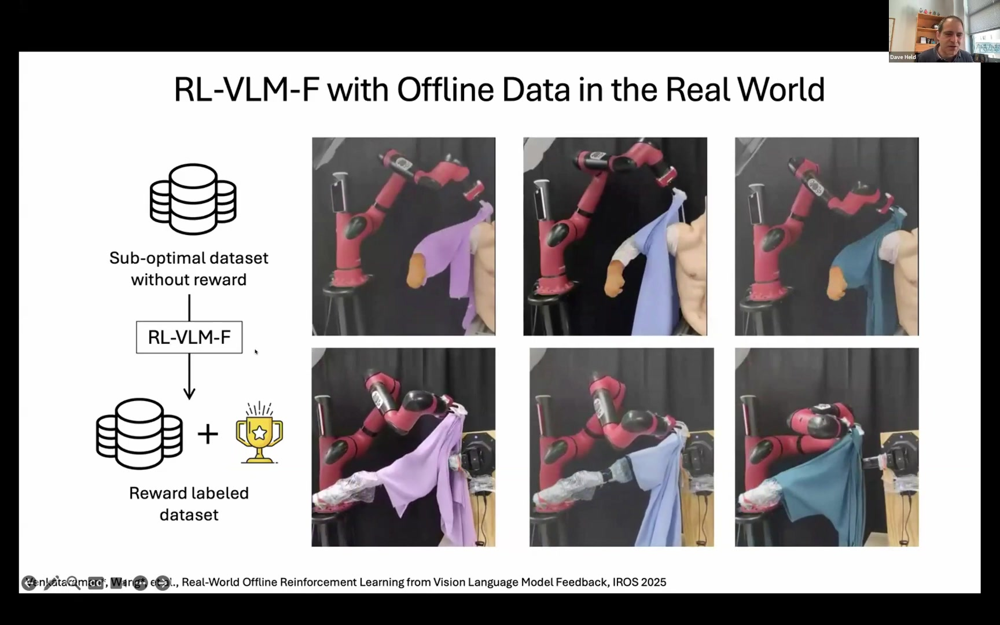
실세계 적용 구조. 보상이 없는 준최적 데이터셋에서 관측쌍을 뽑아 VLM에 비교시키고, 학습된 보상 모델로 데이터셋 전체에 보상을 라벨링한 뒤, 그것으로 오프라인 RL(IQL)을 돌린다.00:21:00 — 준최적 데이터에서 준최적을 넘어서기
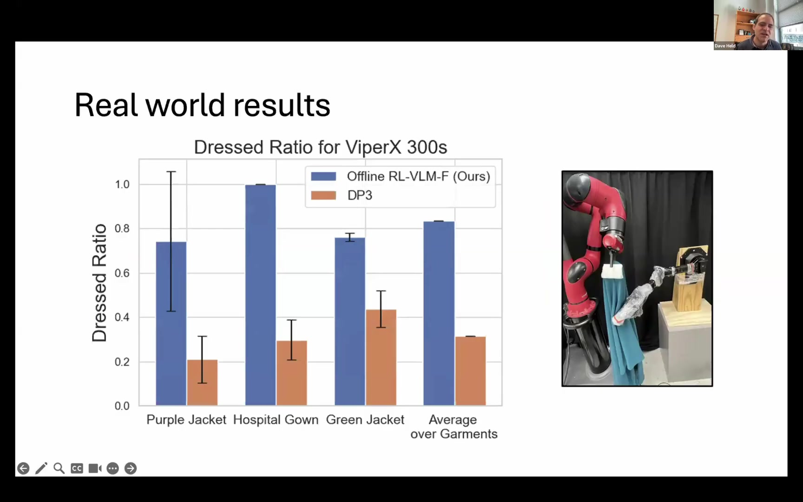
ViperX 300s 로봇과 마네킹 실험 결과다. 같은 준최적 데이터를 모방학습한 DP3보다 오프라인 RL-VLM-F의 착의 비율이 뚜렷하게 높다. 준최적 데이터를 모방하면 준최적에 머물지만, 보상을 붙여 오프라인 RL을 하면 그것을 넘어선다.00:22:00 — 비전은 시뮬, 힘은 실세계
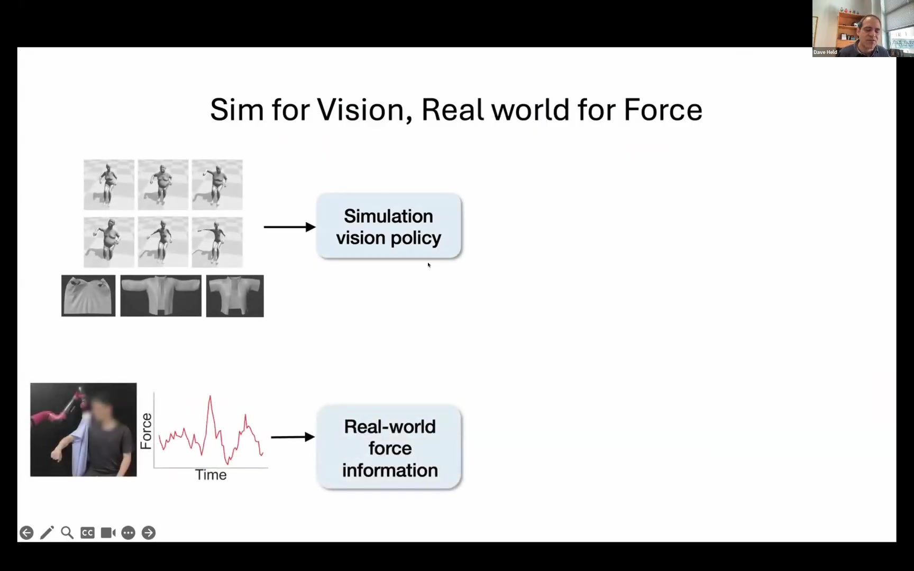
최종 통합의 밑그림. 시뮬레이션에서 비전 정책을, 실세계에서 힘 정보를 얻어 결합한다는 구도가 다시 확인된다.00:23:30 — FMVP: FiLM으로 힘을 사후 주입
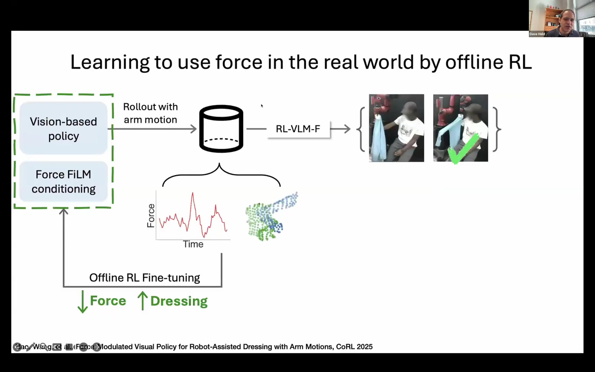
구현의 핵심이다. 시뮬에서 학습한 비전 정책에 FiLM 조건화 레이어를 나중에 덧붙여 힘 정보를 주입하고, 전체를 오프라인 RL로 미세조정한다. 시뮬 초기화가 좋기 때문에 실세계 데이터가 많이 들지 않는다. 보상은 두 종류를 합친다. 힘 최소화는 실세계 힘 센서로 임계값 이하를 유지하면 되고, 착의 성능은 앞서 만든 RL-VLM-F가 제공한다. 화살표가 목표를 요약한다. 힘은 낮추고 착의는 높인다.00:24:20 — 움직이는 사람을 상대로
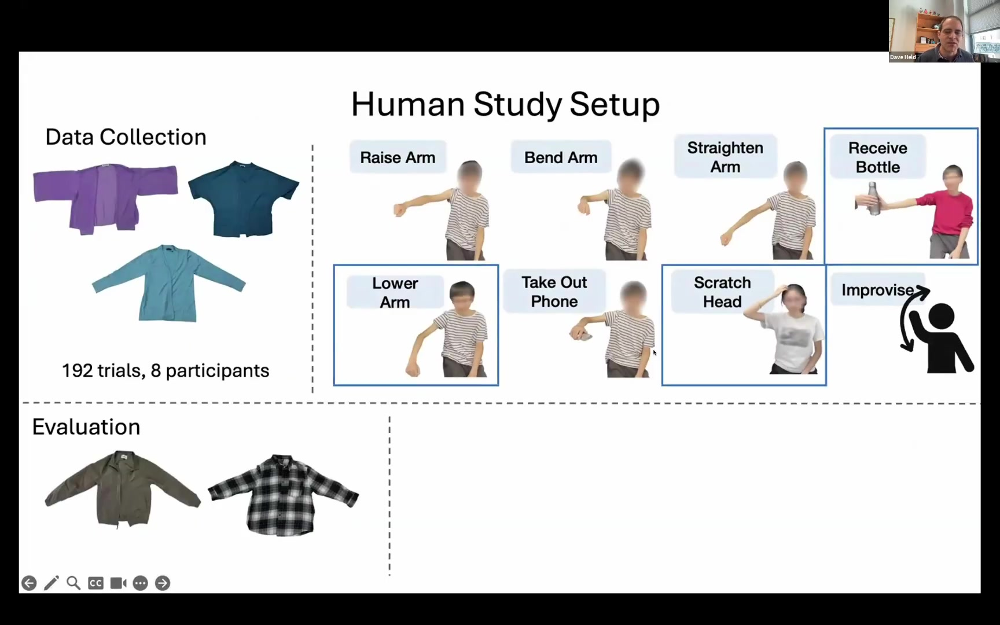
난이도를 한 단계 올린 사람 연구다. 참가자 8명, 192회 시행이며, 참가자는 착의 도중 팔 올리기·굽히기·펴기·물병 받기·전화 받기·머리 긁기 등 의도적으로 움직인다. 학습에 사용된 동작과 사용되지 않은 동작을 모두 평가한다.00:25:00 — 더 편안하고 더 잘 입힌다
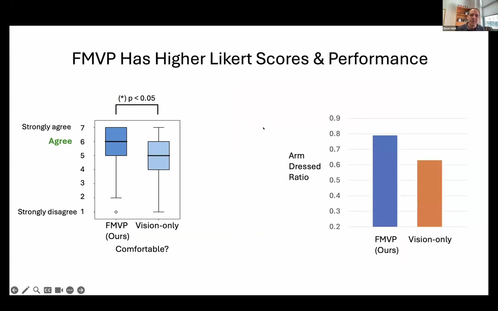
결과는 두 지표 모두에서 우세하다. 편안함에 대한 리커트 점수가 비전 전용 대비 유의하게 높고(p < 0.05), 팔 착의 비율도 높다. 학습하지 않은 동작에 대해서도 적응해 과제를 완수한다.00:26:20 — 그래서 무엇을 해야 하는가
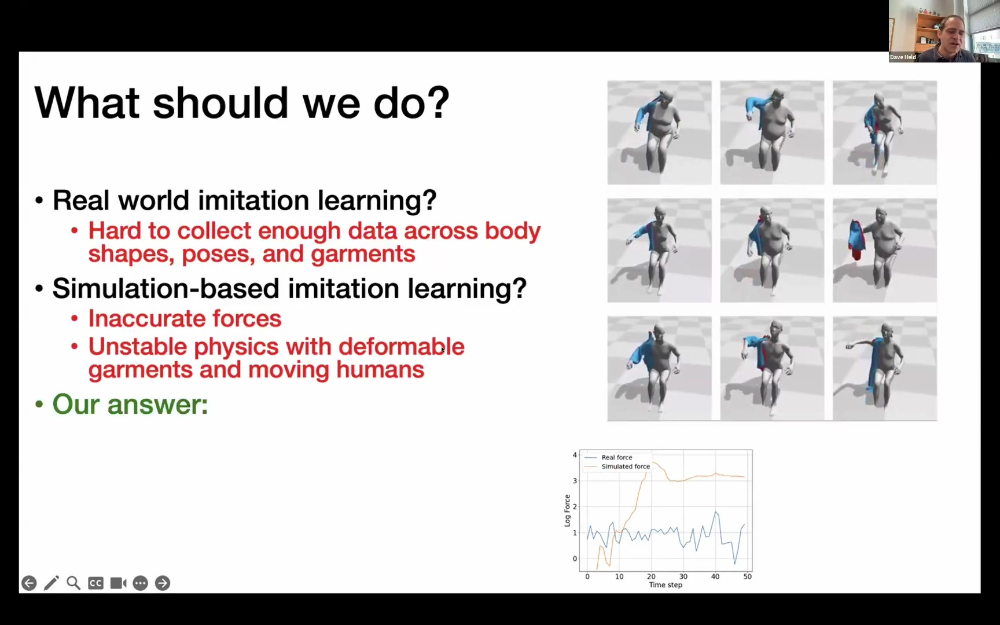
워크샵 주제에 대한 답을 정리한다. 실세계 모방학습만으로는 체형·자세·의복 전반의 데이터를 충분히 모을 수 없다. 시뮬레이션 기반 학습만으로는 변형체 의복과 움직이는 사람 앞에서 힘이 부정확하고 물리가 불안정하다. 답은 결합이다. 대규모 시뮬레이션 데이터로 일반성을 얻고, 실세계 데이터 수집과 오프라인 RL로 성능을 마저 끌어올린다.주요 내용 요약
핵심 포인트
- 하나의 과제를 끝까지 미는 연구 형태의 사례다. 각 단계의 실패가 다음 방법을 규정한다. 표준 RL 실패 → 정책 증류, 힘 부재 → FCVP, 보상 부재 → RL-VLM-F, 통합 필요 → FMVP.
- 시뮬레이션의 한계가 "정확도"가 아니라 "무엇이 부정확한가"로 특정된다. 천의 일반 동역학은 쓸 만했지만 힘 측정값은 전이 불가였고, 사람이 움직이면 물리가 발산했다. 이 구체성이 해법을 결정했다.
- "로봇이 나와 싸우는 것 같다" 는 참가자 발언이 정량 지표보다 강한 문제 정의로 작동했다. 착의율이 높아도 사람이 불편하면 실패다.
- 힘 제약이 성능을 깎지 않고 오히려 높였다. 힘 인지가 정책을 더 성공적인 행동으로 유도한다는 결과는 안전-성능 트레이드오프의 통념을 뒤집는다.
- VLM에게 점수 대신 비교를 묻는다. 사람의 절대 점수가 일관되지 않고 순서만 일관되다는 관찰에서 나온 설계이며, CLIP 계열과 VLM 원시 점수를 모두 앞선다.
- 역할 분담이 일관된다. 시뮬레이션은 일반화, 실세계는 물리적 접촉. 이 분담이 네 편의 연구를 관통한다.
기술적 내용
- 데이터: 인체 메시 6,000+ / 의복 5종. 관측은 의복·팔·엔드이펙터로 분할된 포인트 클라우드. 행동은 엔드이펙터 변위. 알고리즘은 SAC.
- 정책 증류: 자세를 N개 범주로 분할 → 범주별 교사 정책 RL 학습 → 행동 복제로 단일 학생 정책에 증류. 관측 분산 문제를 우회하는 표준 기법.
- FCVP(Force-Constrained Visual Policy): 힘 동역학 모델 f(힘 이력, 포인트 클라우드) → 다음 힘. 정책 샘플 행동 중 예측 힘이 임계값 이하인 것들 가운데 정책 확률 최대를 선택. 동역학 모델은 정책보다 표본 효율이 높아 실세계 학습이 가능.
- RL-VLM-F: (관측₁, 관측₂, 과제 설명) → VLM 선호 → Bradley-Terry 보상 모델 → 정책 학습. 2단계 프롬프팅(서술 후 라벨링)이 1단계보다 우수. 실세계에서는 무라벨 데이터셋 전체를 라벨링해 오프라인 RL(IQL) 로 사용.
- FMVP(Force-Modulated Vision Policy, CoRL): 시뮬 학습 비전 정책 + FiLM 조건화로 힘 사후 주입 + 오프라인 RL 미세조정. 보상 = 힘 임계 보상 + RL-VLM-F 착의 보상.
- 평가: 사용자 연구 17명×30회(초기), 8명×192회(FMVP, 팔 동작 포함). 지표는 팔 착의 비율과 리커트 편안함 점수.
Q&A 요지
- 힘과 비전을 결합하는 최선의 방식은? 현재는 FiLM 조건화를 쓰지만, Held가 생각하는 이상은 힘을 장면에 접지(ground) 시키는 것이다. "이 힘이 어떤 물체가 무엇에 눌리거나 쓸려서 생겼는가"를 정책이 시각적으로 추론할 수 있어야 한다. 그런 아키텍처가 어떤 모습일지는 아직 모른다고 인정하며, 질문자가 제안한 "비주얼 월드 모델의 힘 조건화"라는 방향에 동의한다.
시사점과 한계
한계
- 힘 동역학 모델과 FMVP 모두 실세계 데이터 수집이 여전히 필요하다. 줄어든 것은 양이지 필요 자체가 아니다.
- 오프라인 RL에 의존하므로 수집된 데이터의 분포를 크게 벗어나는 상황은 다루기 어렵다.
- VLM 선호 기반 보상은 VLM이 장면을 오판하는 경우에 대한 방어책이 제시되지 않았다(발표에서 관련 분석은 시간 관계상 생략).
- 힘과 비전의 결합이 FiLM이라는 비교적 얕은 결합에 머물러 있음을 본인이 Q&A에서 인정한다.
현장 적용 관점에서의 시사점
- "시뮬레이션은 일반화, 실세계는 힘"이라는 역할 분담은 굴착기에 거의 그대로 적용된다. 지형·기하 다양성은 시뮬로 커버하고, 토양 반력처럼 시뮬이 못 맞추는 물리는 실세계 데이터로 보정하는 구조가 자연스럽다.
- 힘 동역학 모델만 실세계에서 학습한다는 절충이 특히 실용적이다. 정책 전체를 실기에서 학습시키는 것은 중장비에서 불가능에 가깝지만, "이 행동이 얼마나 큰 반력을 유발할지" 예측하는 모델은 훨씬 적은 데이터로 학습할 수 있고 안전 필터로 바로 쓸 수 있다. 예측 힘이 임계값을 넘는 행동을 사전에 걸러내는 구조는 중장비 안전 요건과도 잘 맞는다.
- 힘 제약이 성능을 깎지 않았다는 결과는 안전 필터 도입을 설득할 때 쓸 수 있는 근거다.
- VLM 비교 기반 보상은 굴착처럼 "완료 상태를 수치로 정의하기 어려운" 작업에 유효할 수 있다. 다만 굴착 현장 영상에 대한 VLM의 판단 신뢰도는 별도 검증이 필요하다.
- 사용자 편안함을 1급 지표로 둔 점은 협업 작업 기계에 시사점이 있다. 굴착기 주변 작업자나 동승 오퍼레이터의 체감 안정성은 착의 보조의 "편안함"과 같은 역할을 한다.
- 다만 이 연구는 저속·저출력 매니퓰레이터를 전제한다. 사람과 접촉하며 힘을 낮추는 문제와, 수 톤급 하중을 다루며 힘을 조절하는 문제는 안전 여유의 규모가 다르다.
관련 노트
- [[yt_Pulkit_Agrawal_On_RL_and_IL_요약]] — 같은 워크샵. "시뮬레이션을 사전학습으로 보라", "접촉과 힘을 최적화하라"는 주장이 이 발표의 실증과 정확히 맞물린다.
- [[yt_Jason_Ma_RL_for_Real-World_Production_Robotics_요약]] — 같은 워크샵. 실세계 데이터 수집을 어디에 집중할지의 문제의식이 공통된다.